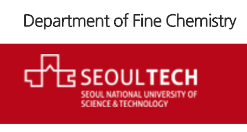

Seoul National University of Science and Technology
Department of Fine Chemistry
Master Student
Advisor: Cheal Kim
|
Seoul, South Korea
Mar. 2017 ~ Present
GPA: 4.19/4.5
|
Seoul National University of Science and Technology
Department of Fine Chemistry
B.S. in Fine Chemistry
|
Seoul, South Korea
Mar. 2013 ~ Feb. 2017
GPA: 3.75/4.5
|

|
Hanna Cho, Ju Byeong Chae, Prof. Cheal Kim,
"A thiophene-based blue-fluorescent emitting chemosensor for detecting indium (III) ion", Inorganic Chemistry Communications, (2018)
|

|
Hanna Cho, Ju Byeong Chae, Prof. Cheal Kim,
Cinnamaldehyde‐Based Chemosensor for Colorimetric Detection of Cu2+ and Hg2+ in a Near‐Perfect Aqueous Solution, Chemistry select, (2019)
|

|
Haeri So, Hanna Cho, Hangyul Lee, Minh Cong Tran, Prof. Ki-Tae Kim, Prof. Cheal Kim
Detection of zinc (II) and hypochlorite by a thiourea-based chemosensor via two emission channels and its application in vivoMicrochemical Journal, (2020)
|
|  |
Teaching Assistant: Inorganic Chemistry Laboratory, Spring 2018
Teaching Assistant: General Chemistry Laboratory, Fall 2017
|
|